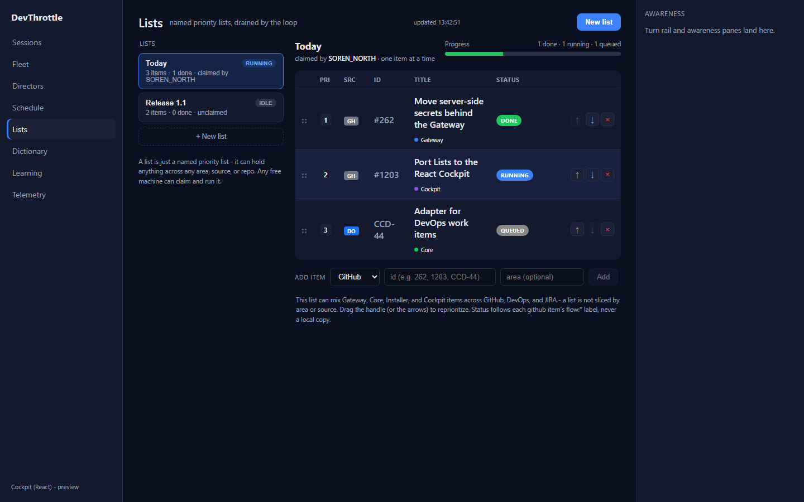
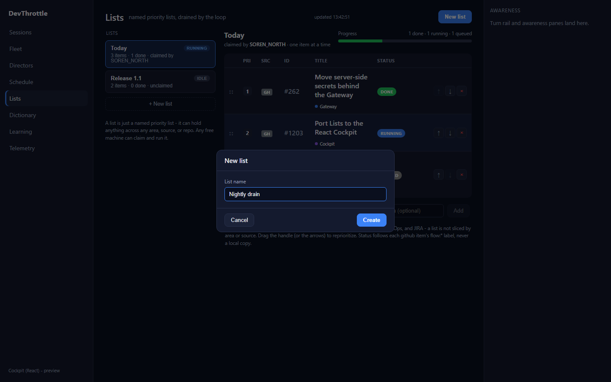
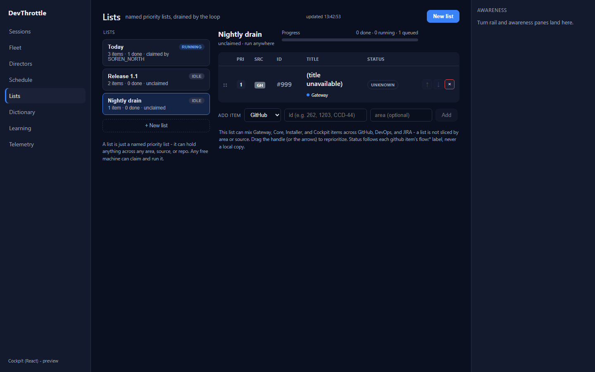
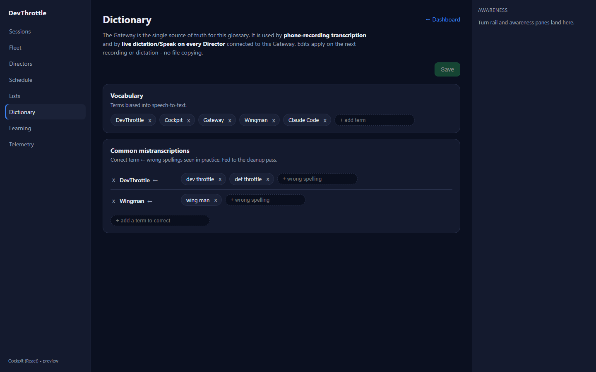
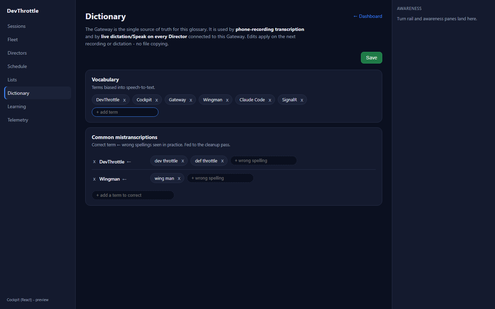
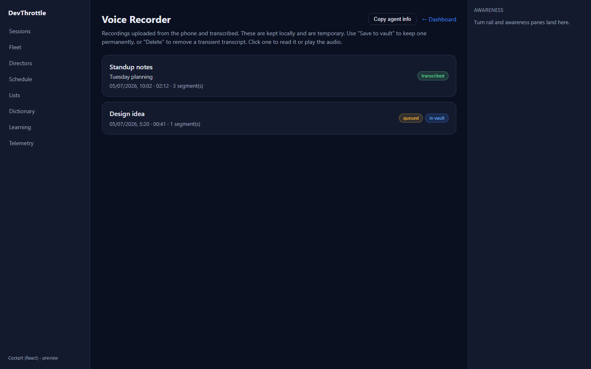
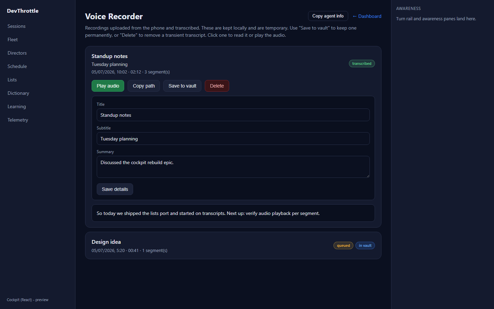
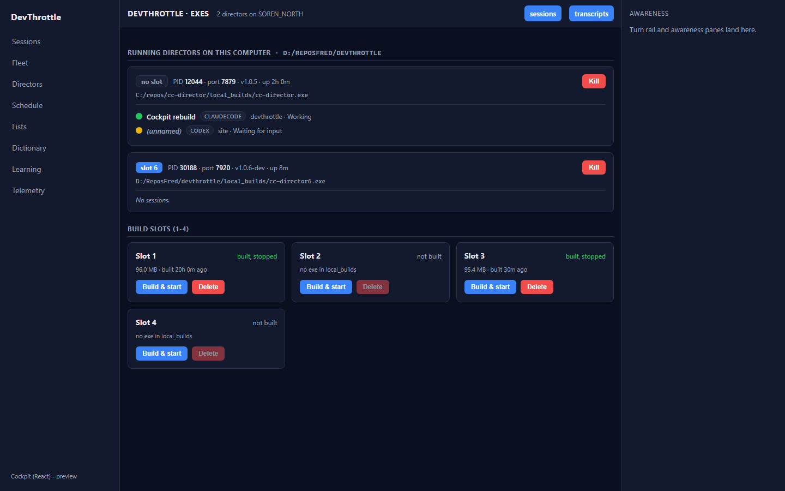
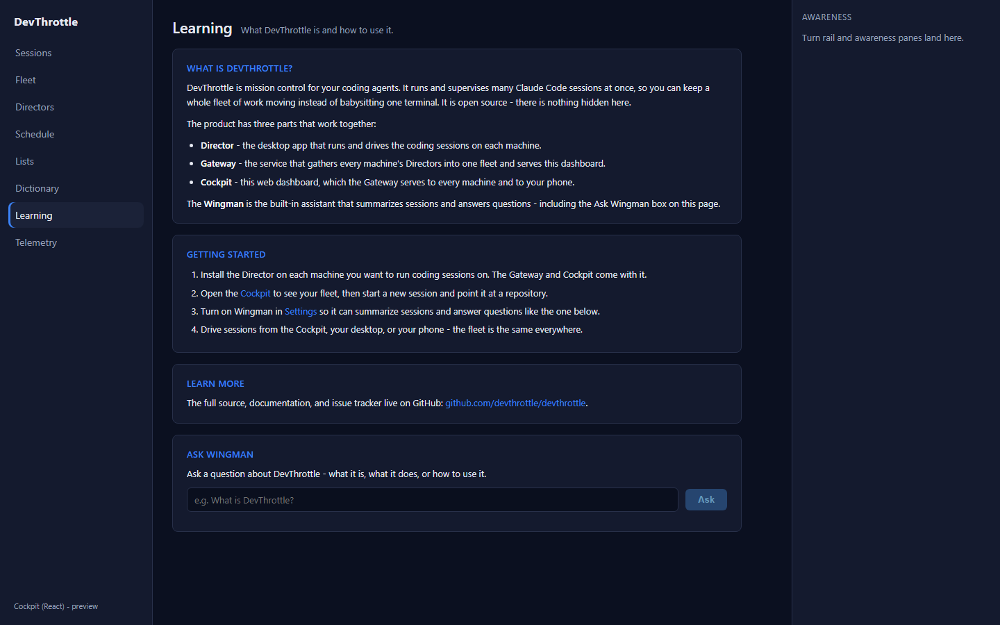
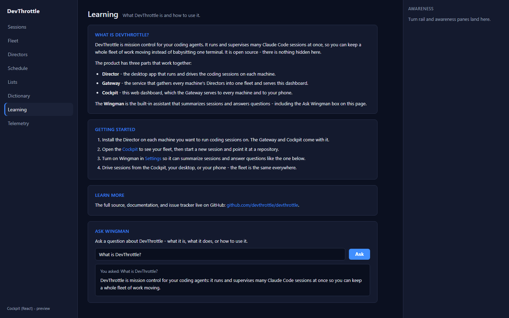

Issue #977 - Cockpit React: port Lists + Dictionary + Transcripts + Exes + Learning
Epic #967 (Rebuild the Cockpit in React). Developer Agent proof. All five tools/data
pages ported one-to-one from their Blazor components into the apps/cockpit React shell,
reading and writing same-origin through the Gateway front door (root-relative paths only).
What was implemented
Five new React views, each a faithful port of its Blazor page, plus five new typed client-core modules (one per data surface) so the desktop shell keeps exactly one copy of each Gateway contract. Routes and left-rail nav were wired in the shell.
| Page | Route | React view | client-core module | Gateway surface (root-relative) |
|---|---|---|---|---|
| Lists | /lists | lists/ListsView.tsx | lists/listsClient.ts + api/itemStatus.ts | /lists*, /gateway/lists/item-status |
| Dictionary | /dictionary | dictionary/DictionaryView.tsx | dictation/dictionaryClient.ts | /ingest/dictionary |
| Transcripts (Voice Recorder) | /transcripts | transcripts/TranscriptsView.tsx | recordings/recordingsClient.ts | /ingest/recording(s)* |
| Exes | /exes | exes/ExesView.tsx | exes/exesClient.ts | /exes/*, /directors/{id} |
| Learning | /learn | learning/LearningView.tsx | learning/learningClient.ts | /wingman/ask-devthrottle |
Per the Blazor nav (which shows Dictionary + Learning in the rail and reaches Recordings/Builds by direct route), Dictionary and Learning were added to the left rail; Transcripts and Exes are route-only. Lists already had a rail entry from the scaffold.
Acceptance criteria → how each is met
| Criterion | How it is satisfied | Proof |
|---|---|---|
| Lists, Dictionary, Transcripts, Exes, Learning render the same information and support the same actions as the Blazor pages. | Each view is a line-by-line port of the corresponding .razor: same layout,
same fields, same actions (create/append/reorder/remove, glossary edit + save, expand/play/
copy/delete/promote/edit-meta/agent-info, kill/build-start/delete-slot, ask-wingman), same
display helpers. |
Screenshots below |
| Lists per-item title + flow:* status come from the Gateway endpoint, not a browser-held GitHub token (issue #970). | The Lists view resolves each item through GET /gateway/lists/item-status
(client-core resolveItemStatus); the browser never holds a GitHub token. |
lists.png (DONE / RUNNING / QUEUED / NEEDS YOU badges + titles) |
| The corresponding Blazor paths can be flipped to React with no loss of function. | Every read and mutation is implemented against the identical Gateway REST surface the Blazor GatewayClient uses. Mutations were exercised and recorded (see below). | capture-summary.json |
| No absolute URLs in the client (lint rule passes). | All requests are root-relative; the one external link (public github.com docs link on the Learning page) carries the sanctioned inline lint exception, mirroring the sign-in site. | npm run lint exit 0 |
Build gate
| Gate | Result |
|---|---|
npm run build --workspace @devthrottle/cockpit (tsc --noEmit + vite build) | PASS (90 modules, built clean) |
npm run lint (Gateway-only-ingress rule) | PASS (exit 0) |
npm run typecheck (workspace) | cockpit + mobile clean; only pre-existing awarenessClient.test.ts errors remain (tracked as #1010, out of scope) |
dotnet build CcDirector.Gateway.csproj -p:RunCockpitBuild=true | Build succeeded, 0 Warning(s), 0 Error(s) (React bundle staged into wwwroot/c) |
dotnet build cc-director.sln | Build succeeded, 0 Warning(s), 0 Error(s) |
Proof - rendered pages (isolated, mocked Gateway)
Each page was rendered from the production React bundle (vite preview) and driven by
Playwright against a mocked Gateway (in-browser page.route, no live Director touched).
Reads populate the pages; writes were exercised and recorded to prove they hit the correct
root-relative Gateway endpoint with the correct body.










Proof - write paths hit the Gateway (recorded)
The mutations the pages issued during the capture, recorded by the mock. Each is a correct root-relative Gateway call with the correct body - so the Blazor paths flip with no loss of function.
POST /lists {"name":"Nightly drain"}
POST /lists/Nightly%20drain/items {"source":"github","id":"999","area":"Gateway"}
PUT /ingest/dictionary {"vocabulary":[...,"SignalR"], "commonMistranscriptions":{...}, "profiles":{}}
POST /wingman/ask-devthrottle {"text":"What is DevThrottle?"}
Full record: capture-summary.json.
CenCon impact
No architecture or security drift. This is a UI port onto the existing Gateway REST surface: no
new endpoints, no new secrets in the browser (the GitHub token stays on the Gateway per #970), and
the browser talks only to the Gateway through root-relative paths (the epic's hard rule, enforced by
the lint gate). No docs/cencon manifest or security-profile change is required.